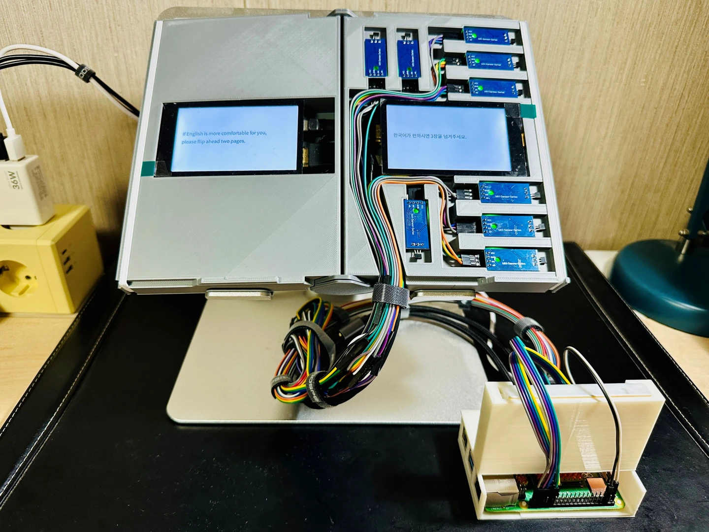

2025 / Tangible Interaction / Generative AI
Why do you read me?
An interactive book that reads its reader. Turning the pages answers reflective questions, and AI responds to the choices made along the way.
A book that reads its reader
Reading usually begins with a person interpreting a book. This project turns that relationship around: the reader’s physical choices become something the book can interpret and respond to.
The reader answers reflective questions by turning paper pages. The system records these choices and uses a language model to create a short, personalized reflection, which appears on the displays built into the book.

How the pages become input
Turn a paper page
Thin neodymium magnets are attached to the pages. Nine Hall sensors in the book-cover base detect the changing magnetic state.
Confirm the open page
A Raspberry Pi reads the sensors and estimates the page position from the number of detected magnets. The state must remain unchanged for four seconds before a page turn is accepted.
Choose through reading
The confirmed page position controls language selection, question navigation, and answers. Physical page turns carry the reader’s choices into the system.
Receive a response
A language model combines the selected answers into a brief reflection and returns it through the embedded displays.
Keeping the material experience of a book
The paper book and the sensing base are separate. The base contains the computing hardware, sensors, and displays; the paper pages carry magnets. This arrangement allows a different paper book to be used with the same base.
Page turning is central to the experience. It connects AI interaction to a familiar action and makes the sequence of physical choices part of the exchange. The four-second confirmation window helps distinguish an intentional page selection from pages moving during a turn.

Questions and reflection
I refined the questions and result structure with feedback from a psychology major, focusing on clarity and coherence. The output is a prompt for personal reflection.
The project explores how an everyday object can support interaction with AI. A possible next step is to compare this page-based interaction with screen input among people with different levels of digital familiarity.
Implementation and contribution
I developed the concept and built the system, including the book-cover structure, page sensing, interaction logic, AI integration, and prototype documentation. The question and result content benefited from the psychology feedback described above.
- Computing and sensing
- Raspberry Pi 4B, GPIO input, nine Hall sensors, neodymium magnets
- AI response
- OpenAI API
- Fabrication
- SketchUp and 3D printing